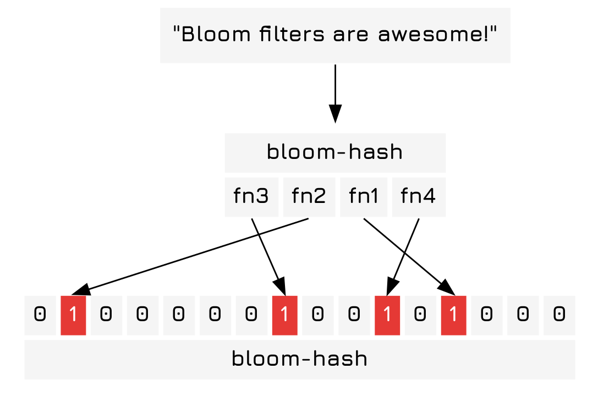
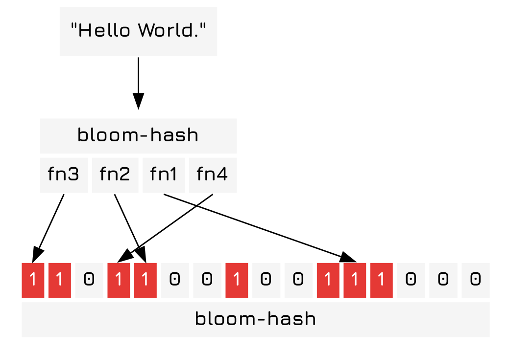
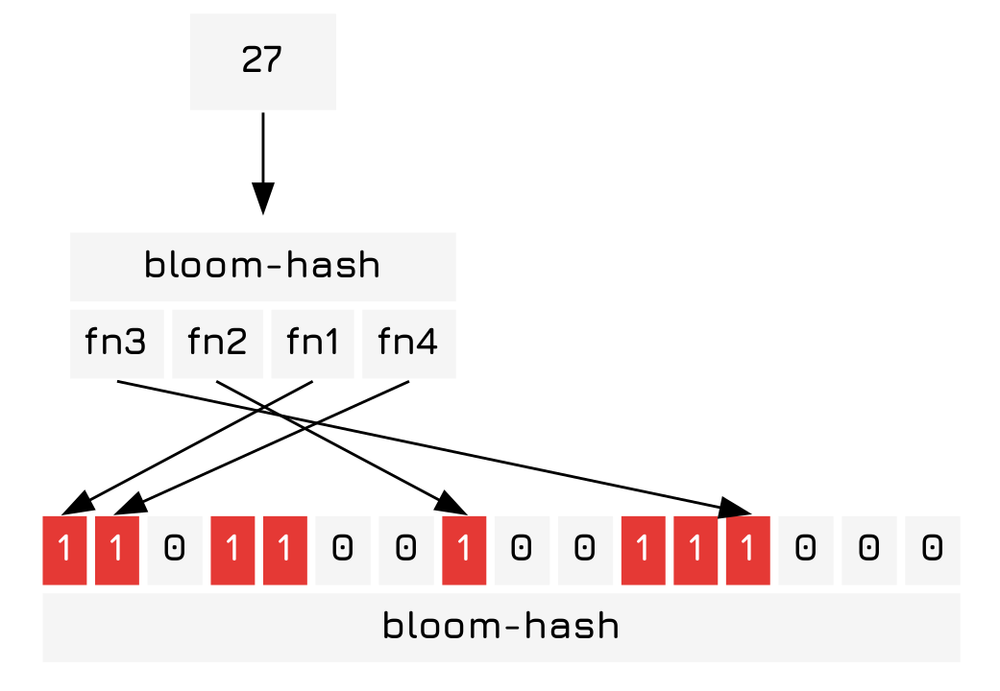

Implementing Bloom Filters
Table of Contents
Introduction
This will be the first post in my "Implementing" series of tutorials, where I implement a common (or not so common) algorithm and describe how to use it. Bloom filters quickly give you an answer of if something is probably in a set, or definitely not in a set. This can be used to reduce search times for high volume but low access speed media. 1 A good example would be a collection of backup disk or (gasp) tape drives.
Algorithm
Bloom filters are really simple if you know how hash functions work. You create a series of \(k\) hash functions who output numbers from \(0\) to \(m\), the size of the filter array. To insert items into the filter you hash the item with the functions and set the indices provided to true 2 Or 1, or incrementing a number.. To check that an element is probably contained in the set or definitely not contained in the set you simply check that all the indices are set to a truth-y value.
Example
The string "Bloom filters are awesome!" is hashed in a simple bloom filter of \(m=16\), \(k=4\) and converted into a list of indicies who are set to the true, or in this case 1.

Next we add the string "Hello World." to our bloom filter.

To determine if something is in the set we can check the indices output by our hash functions are set to 1 when we hash an object. If all of them are set to 1 it is probably within the bloom filter. If any one of them is 0 then it is definitely not in the bloom filter.

And now we can clearly see that 27 is in the bloom fitler… oh, wait…
Implementation
Hash Function
Here we implement a simple folding hash function that takes arguments and then folds them over a list.
pads
The bloom filter requires a series of different hash functions. To generate them we simply use a list of large prime number pads that produce hash functions that yield wildly different outputs.
(def ^:private pads [3484115242153581271N 8024590393702697081N 4268910574050118391N 5802681426294560369N 5506370764815358409N 8992090933206599789N 4276741680929616149N 2280789073680025603N])
hash-obj
Now here's the simple hash function that I was talking about earlier. As you can see it simply converts the object into a string, the string into a series of numbers, and then folds the string over itself with modular multiplication, basically ignoring overflows.
(defn hash-obj [obj pad] (->> (str obj) (map int) (apply (fn [x & xs] (cons (mod (*' x pad) Long/MAX_VALUE) xs))) (reduce #(mod (*' %1 %2 pad) Long/MAX_VALUE)) long))
bloom-hash
The bloom-hash function is trivial and is left as an exercise to the reader simply generates a hash function using the prime numbers and then hashes the object for each one. Following that it takes the modulus of \(m\) to produce the index. There are up to 7 pads that may be used for the number, meaning the maximum value of \(k\) is 7.
(defn bloom-hash ([obj] (bloom-hash obj 1000)) ([obj m] (bloom-hash obj m 4)) ([obj m k] (map #(mod (hash-obj obj %) m) (take k pads))))
optimal-k
To find the optimal \(k\) we use the following equation
\(\displaystyle k = \frac{m}{n}ln2\)
Where \(k\) is the number of hash functions, \(m\) is the size of the filter, and \(n\) is the number items that are expected to be added to the filter. This must be computed before the filter is used, and therefore likely will be slightly inaccurate. 3 I think that you probably could use some sort of very simple adaptive control system to minimize the error over many uses. (yes, I am intentionally avoiding saying "AI".) This may be a problem should the sets be an unexpected size.
(defn optimal-k [m n] (-> (/ m n) (* (Math/log 2.0)) long))
Bloom Filter Objects
The BasicBloomFilter Record
And now the BasicBloomFilter type, our solution is fairly simple, we use a boolean array and check if the values in the array are true.
(defrecord BasicBloomFilter [m k filter]) (defn contains? [filter-obj obj] (->> (bloom-hash obj m k) (map #(get-in filter-obj [:filter %])) (reduce #(and %1 %2)))) (defn add [{:keys [m k] :as filter-obj} obj] (->> (bloom-hash obj m k) (reduce #(assoc-in %1 [:filter %2] true) filter-obj))) (defn new-bloom-filter [m n] (->BasicBloomFilter m (optimal-k m n) (vec (repeat m false))))
The drawback to this basic bloom filter is that you can't delete items from it. It's very space efficient, but to delete a single item you have to rebuild the entire bloom fliter, hashing all the objects you want to add. To solve this problem, at the cost of some space efficiency 4 Clojure booleans use a whole byte for each value, a better approach would be to use numbers and then extract the bits from there using some tricks with bit-shifting. But this is a toy example and bit-shifting would be both a longer post and less clear., we can move on to using integers or even longs.
The CountingBloomFilter Record
The counting bloom filter extends the BasicBloomFilter with the delete operation by using numbers instead of boolean values. This is basically the same as storing
(defrecord CountingBloomFilter [m k filter]) (defn contains? [{:keys [m k] :as filter-obj} obj] (->> (bloom-hash obj m k) (map #(get-in filter-obj [:filter %])) (reduce #(and %1 %2)))) (defn add [{:keys [m k] :as filter-obj} obj] (->> (bloom-hash obj m k) (reduce #(update-in %1 [:filter %2] inc) filter-obj))) (defn del [{:keys [m k] :as filter-obj} obj] (->> (bloom-hash obj m k) (reduce #(update-in %1 [:filter %2] dec) filter-obj))) (defn new-counting-bloom-filter [m n] (->CountingBloomFilter m (optimal-k m n) (vec (repeat m 0))))
Tangled Code Block
Here is where the code is tangled, producing a single file.
(ns bloom-filter (:require [clojure.math.numeric-tower :refer [expt]])) <<pads>> <<hash-obj>> <<bloom-hash>> <<optimal-k>> <<multi-methods>> <<basic-bloom-filter-record>> <<counting-bloom-filter-record>>
Conclusion
Now you should have a rough idea on how a bloom filter works and how to implement one, as well as (presumably) some idea of how hash functions work.